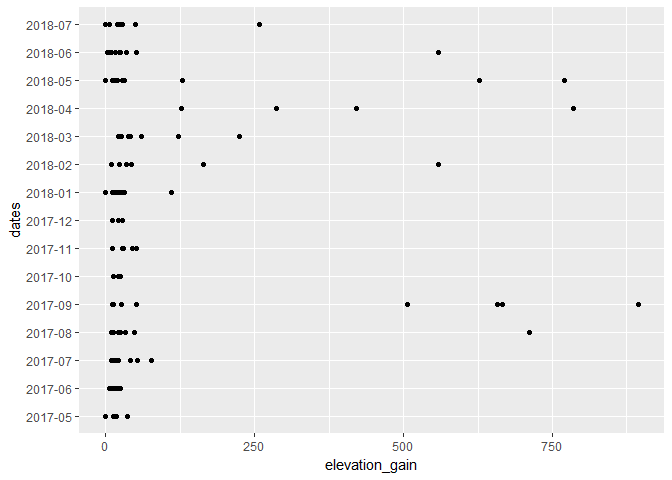
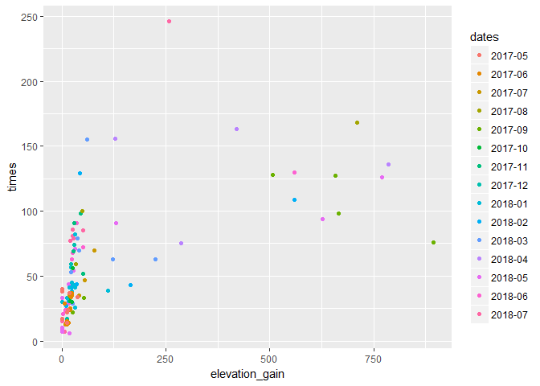
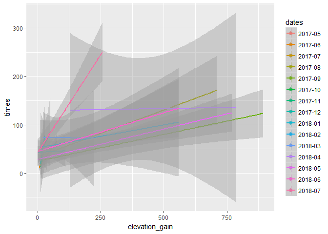
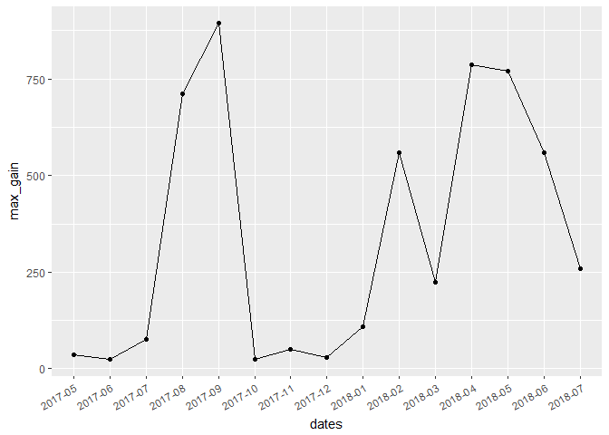
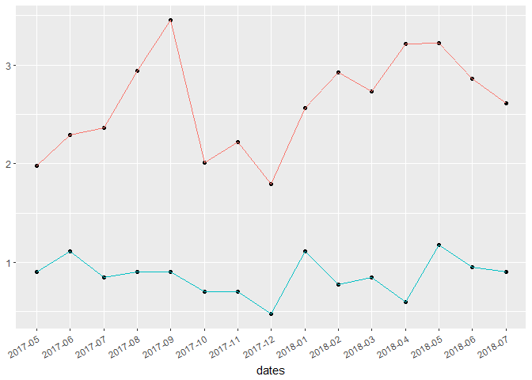
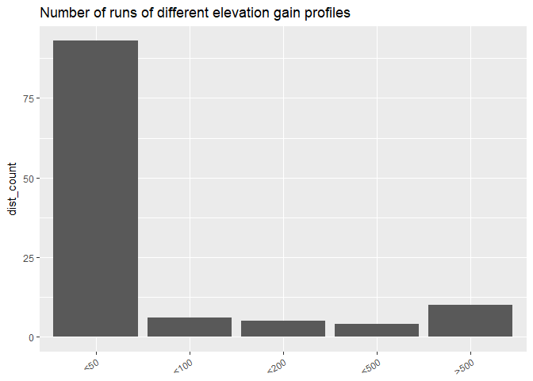
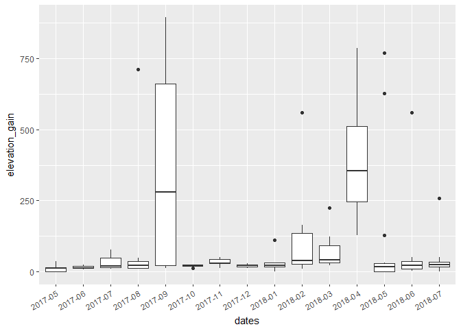

Hey everyone! This article is part 2 (see part 1) of last week’s piece about analysing my running data from strava, and this time it is about my elevation gain data. Again, I am using the rStrava package. If you’re wondering why I have additional data from last week’s article, it’s because I had a bunch of runs on “private”, so I just unprivated most of them so I have more complete data. I might update last week’s article as well. Anyways, let’s jump in the elevation gain study!
Overall elevation gain evolution
I am starting with the most general plot that shows a dot for each run done during different months, and the further on the right it goes, the higher the elevation profile the run.

This shows an overview of my elevation gain during running, and I’ve mostly run on flat terrain, mainly because I have flat trails litterally at my front door… I’ve done a few runs last september with elevation gain because I had a race to prepare for. I stopped going for trails in the moutains after my last race of 2017, a vertical race, because it was really hard for me, and actually it left me feeling very anxious and not ready for that so I took a looong break. I went back to it when I did my first half marathon, it was only about 230 m so I didn’t prepare for it at all, and I felt pretty good so the anxiety I had for climbing dropped. The number of runs with more elevation gain increased during the spring months following the half marathon, and I did a couple races with more elevation gain than I’d ever done before, and it was thrilling to be back in the mountains! It’s hard to draw too many conclusions on a plot like that, so let’s look at the data more closely in the next parts:
Elevation gain vs times: do they correlate?
I first plotted elevation gain profiles vs total run times to see if they correlate. Last week I showed that it clearly does for run time vs distance but that it wasn’t completely linear, and for a given distance, times vary. This is probably due to elevation gain, as well as my own progression, climate conditions, and how I’m feeling. The second plot shows a linear regression model for the data.

So this graph shows how elevation gain correlates to overall run times. Obviously, it’s all over the place, there are many runs where I had barely any elevation and the distance actually accounts for the times, it makes sense. But there are a few for which the time was the same and the elevation increased a lot. I think mostly the takeaway for this is I need to work on my flat trails speed, not just my endurance, and although I think I should improve my speed on climbs, it isn’t where I need improvement most. On that second graph with a linear regression model, there is much more variation on higher elevation profiles. But this linear regression model is not a good fit to this data as you can see, at least not for all the data. Let’s see month by month if it fits better:

Month by month it’s a little chaotic in linear regression model but I feel like it’s already a little more representative of the data. But distance is much more of a factor in overall times than elevation gains.
Evolution of max elevation throughout the year

I go through phases with elevation gain, nothing is very consistent for reasons I’ve already mentioned. What I’m sad about is I don’t see tangible improvement! This is something that I should pay more attention to, I do elevation gain in races, but don’t prep for it enough I think. I need to modify my training to fit what I need and what I want.
Evolution of number of runs in a month vs amount of elevation gain
I want to put on the same plot my total elevation gain and the number of runs done. Down here, in red is the elevation gain done in a month, and in blue is the number of runs done. The scale is logarithmic.

Unlike for the total distance vs number of runs, the total elevation gain vs number of runs doesn’t really correlate too much, at least for most months. This tells me that I really don’t do enough climbing in training, but I am going to work on that.
Most run elevation gain profiles
I want to see what kind of elevation gain profiles I run most often with this next plot:

I mostly run on flatter trails of lower than 50m elevation gain profiles, right outside along the river. But as I’ve mentioned, I should really try to focus more on elevation gain at least once a week, it will make me faster in races, which are mostly trail races in the mountains. Most of the runs of categories other than 50m are races after all…
Elevation gain boxplot month to month
This boxplot is another way to look at how my running changes from month to month, the larger the box is, the more diverse the elevation gain profile is.

My months all look very… flat. There aren’t any months where I just concentrated on climbing, and on months where I did have some climbing, the boxplot is really large, so I also run a lot on flat terrain during that same month. This just confirms everything I’ve shown before, that my runs with elevation gain are my races and I don’t train at all enough for them. The funny thing is I never even realized how little I was doing.
This week I took a little rest after a big week of running, I felt tension in my knees so I am giving them time to be perfectly fine for my post-running-analysis training, which I am going to design right after finishing this article. I am setting straight for the mountains as soon as my rest week is over!
I hope this was interesting for you, it definitely taught me more about myself! See you next time, have fun on the trails!
Sciathlete